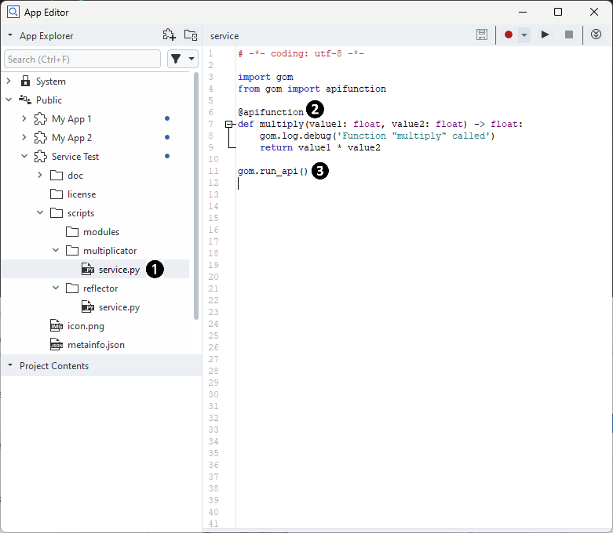
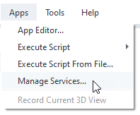
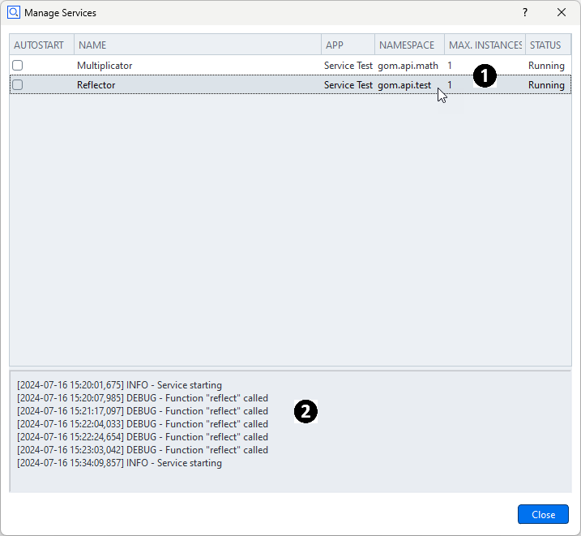
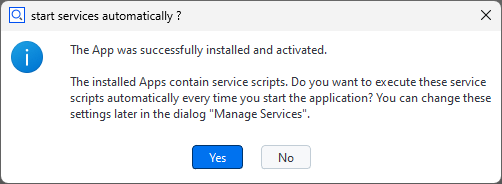
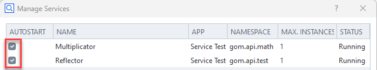

Using services
Abstract: A ZEISS INSPECT service is a Python script running continuously in the background, which exposes API functions to other scripts. Services can be distributed via Apps and can be used as computation kernels or callback targets. Services have been introduced in ZEISS INSPECT 2025.
Service definition
Each service consists of a Python script file in an App. The App’s metainfo.json declares the script to be a service. Multiple services per App are allowed. Each of these services will be executed in its own separate Python interpreter process.
{
// ...,
"services": [
{
"endpoint": "gom.api.math",
"name": "Multiplicator",
"script": "multiplicator/service.py"
},
{
"endpoint": "gom.api.test",
"name": "Reflector",
"script": "reflector/service.py"
}
],
// ...
}
Syntax
Key |
Description |
Example |
|---|---|---|
script |
Service script, relative path whithin the App |
“folder1/folder2/script.py” |
name |
Human readable name of the service; will be displayed in |
“My Useful Service” |
endpoint |
Service API endpoint where the service functions |
“gom.api.meshing” |
Example

An App called ‘Service Test’ defines two services in its
metainfo.jsonfile (1):A multiplicator service accessible via the API endpoint
gom.api.math(2) andA reflector service available at
gom.api.test(3)
Each service is associated with a script (4), (5).
Service scripts
Note
Functions decorated as @apifunction will be exported as the service API.
A service is a regular Python script file. Each function which shall be exported as a service API must be decorated with the @apifunction decorator. The service must be started by calling gom.run_api() after all content has been declared.
Example

The script
service.pyimplements the service and is referenced in the App’smetainfo.jsonfile.The function
multiplywill be available for other scripts and is therefore executed in this services process.The call of
gom.run_api()starts the service. The call does not return as long as the service is running.
Calling services
Note
A registered service can be used like any regular Python module.
For using a service, the following steps are required:
Import the service by using its API endpoint name
Call the service function
import gom
import gom.api.math
import gom.api.test
# Call multiply function from service #1
result = gom.api.math.multiply (23, 42)
# Call reflect function from service #2
result = gom.api.test.reflect({'test': 123})
Note
Each service is running in a separate Python process. The communication works via a socket based protocol. Currently the service has to run on the same machine as the application and can only be managed from there. In the future, this concept might be extended.
Managing services
You open the Manage Services dialog with Apps ► Manage Services… from the ZEISS INSPECT main menu.


The dialog shows the registered services (1) together with the service status.
When a service is selected, the persistent service log will be displayed (2).
The right mouse menu offers the options
Restart Service,
Stop Service and
Update Services (rescan the App and script database for installed services).
Service registration
Important
Services provided in an App are registered immediately when the App is installed, but they are not started automatically!
When an App contains service definitions, the services are made available to the system as soon as the App is installed. Run ‘Update Services’ from the Manage Services dialog to register services from a newly created App. The services will be in STOPPED state until being started manually.
Service autostart
The autostart setting for each service can be changed in two ways:
After installation of an App, the user is prompted if the provided service shall be autostarted from now on:

After installation of an App, the autostart state of a service can be changed in the Manage Services dialog:

Logging
Hint
Each service has a persistent log.
The current content can be displayed in the Manage Services dialog by selecting the desired service. The log can be cleared via RMB ► Delete Log File in the log output widget. By default, basic service events like startup/exit are logged.
Hint
The service log files stored as C:\ProgramData\gom\log\service-<endpoint>.log, e.g. service-gom-api-test.log. You can copy the path using RMB ► Copy Log File Path To Clipboard.
Adding log output to a service
Hint
Log output can be added by using the gom.log logger in the service script.
Messages from the logger will be forwarded into the service log file. The standard Python log levels can be used.
import gom
gom.log.debug ('Debugging message')
gom.log.info ('Informational message')
# Same with 'warning', 'error' and 'critical'
See also
See Python Logging HOWTO to learn more about logging in Python.
Service API documentation
See gom.api.services